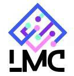

这里有一个 简体中文版
Line Launcher is a Minecraft Launcher developed by Huangyu and ILoveEi
It has an unofficial name, Line Minecraft Launcher, on which we have developed its abbreviation LMC.
Our launcher is not yet fully developed, please stay tuned.
GitHub Main Repository click here.
Python Version's Repository click here.
Minecraft Official Website click here
If you want help/join us, you can submit Pull-Requests/Issues, or send emails to line@huangyu.win , Alternatively, you can contact us through QQ (Chinese chat software) number 3541621163.
Line Launcher has no association with Mojang AB Studio or Microsoft.